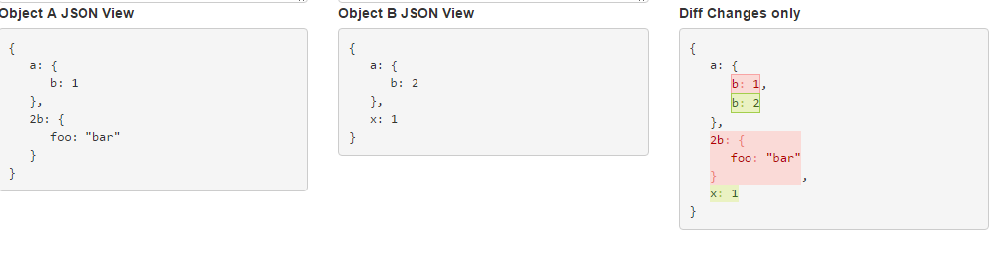

Testing
Why write tests?
To catch bugs!
While true, this is not the most important reason.
Why write tests? - In theory
- Faster dev cycles
- Better design
- Higher quality
- Making sure you are writing only what you need
Why write tests? - In reality
- Fast release cycles
- Finite (no) QA resources
- Large integrated codebase
- Person modifying the code is rarely original author
What are the type of tests?
Scope:
unit,
integration,
functional
Performance:
load,
stress
Perspective:
Correctness,
Usability (General),
Usability (Specific axix: I18n, Accessibility)
Misc:
Security,
...
What do we test?
Common cases:
The happy paths,
In all their forms (E.g. wide chars Îñţérñåţîöñåļî~åţîöñ)
Edge cases
empty/0 items,
no data,
wrong input/output
Failure cases:
Failures in production lead to uncommon code
Anything that led to a bug:
Once it's fixed, you want it to stay fixed
Properties of a good test
- Each test method exercises one thing
- Comprehensive
- Deterministic
- Hermetic
Properties of a good unit tests
- Tests the "smallest" component possible
- Ideally each test exercises one path through one method
- Fast (< 10ms most of the time)
- No calls to a database, bigtable etc.
- Limited or no FileIO
- No sockets except to your own process
- No calls to external slow functions
Properties of a good integration test
- Tests interaction between components
- Ideally each test exercises the interaction between exactly two components
- Look for places where you used “stunt doubles” in unit tests. These are paths you haven’t tested yet
Properties of a good integration test

Properties of a good functional test
- Tests the system end to end
- Functional testing everything is not possible (combinatorial explosion)
- Stability matters, and is expensive
- Choose Functional tests that add confidence. Sample goals -- after executing all functional tests:
- Every page was loaded at least once
- Every subsystem was executed at least once
- Don't forget to load/stress/performance tests
Differences between tests
| Featrure | Unit .. Functional |
|---|---|
| Speed |
| Featrure | Unit .. Functional |
|---|---|
| Isolation |
| Featrure | Unit .. Functional |
|---|---|
| Confidence in parts |
| Featrure | Unit .. Functional |
|---|---|
| Confidence in system |
| Featrure | Unit .. Functional |
|---|---|
| Fragility |
| Featrure | Unit .. Functional |
|---|---|
| Speed | |
| Isolation | |
| Confidence in parts | |
| Confidence in system | |
| Fragility |
Tests allocation

Verifying with "Goldens"
Deterministic program
A program is deterministic, or repeatable, if it produces the very same output when given the same input no matter how many times it is run.
What is "Golden"
Golden is expected result of some deterministic program execution stored in a form of text (or JSON) file or as a screenshot of UI state.
Examples of "Goldens"

"Goldens" from one system can be passed as input into anther systems and so on.
var golden = TestUtils.readGolden("InputGoldenName");
var result = ClassUnderTest.exec(golden);
TestUtils.compareWithGolden(result, "OutputGoldenName");
Result of "Goldens"
Result of "Goldens"

Testing strategy
- Before integrating
Pros: greener build. Cons: much slower dev. - After integrating
Pros: faster dev. Cons: build less green. Buildcops presence required. - Combined